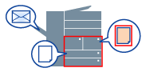

Страницу для печати можно указать по типу бумаги.

1.
Откройте вкладку [Источник бумаги].
Если используется принтер серии LBP, переходите к шагу
3.2.
Выберите [Выбор по] → [Типу бумаги].
Если для разных страниц нужно указать разные типы бумаги, выберите желаемую установку в [Выбор бумаги]/[Типу бумаги].
4.
Установите тип(-ы) бумаги.
В отображаемом окне [Настройки]: выберите бумагу, чтобы получить информацию для [Отобразить категорию бумаги] в [Настройки] (
Диалоговое окно [Настройки типа бумаги]) → нажмите [Получить сведения о бумаге] → выберите бумагу из [Типу бумаги] → нажмите [ОК].
Справки
Типы бумаги, установленные для [Типу бумаги] в диалоговом окне [Формат для назначения лотка] вкладки [Настройки устройства], отображаются в [Типу бумаги].
В [Типу бумаги] отображаются только типы бумаги, которые можно использовать с установленными настройками печати. Например, если Вы выбрали [Двухсторонняя печать], отображаются только типы бумаги, которые можно использовать вместе с [Двухсторонняя печать]. Более подробно о переключении между двухсторонней и односторонней печатью см. в разделе
Односторонняя и двухсторонняя печать.